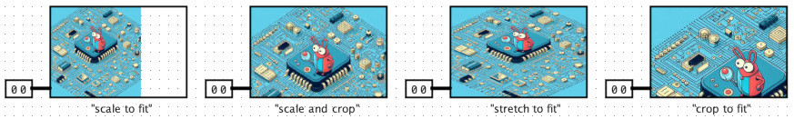

Slideshow
Behavior
Holds a small collection of images, and displays one of them based on the
value of its input. A slideshow might have a 3-bit input, used to select one of
8 possible images.
Pins
There is only one input pin, on the west edge, with bit width determined by
the 'Address Bit Width' attribute. This input is used to select the
image to be displayed.
Attributes
- Address Bit Width
- The number of bits for the input pin.
- Number of images
- The number of images stored in the slideshow, up to 32 images maximum.
- Display Width
Display Height
- The size of the displayed image, in pixels.
- Image Fit
- This attribute has no effect if the images exactly fit the specified width and height
for the component, or if it can be naturally scaled to fit without changing
the aspect ratio. For images that don't fit nicely, this attribute
controls how the images are fit into the display area: "scale to fit"
will maintain the aspect ratio but scale the image as large as possible
while still fiting entirely within the boundary,
even if this leaves some space unfilled; "scale and crop" maintains the
aspect ratio but scale the image so it fills the entire boundary with no
empty areas; "stretch to fit" will stretch the image to fit the boundary
even if this distorts the aspect ratio; and "crop to fit" will simply crop
the image to fit, neither scaling nor stretching.

- Image 1, 2, 3, ...
- Click these to choose PNG or JPG/JPEG image files for the slideshow. After
selecting each file, you can choose to embed the image data within your project,
or store only a link to the file.
Poke Tool Behavior
None.
Limitations
Currently supports only PNG or JPG/JPEG images.
Currently supports only local files. Linking to a URL is not supported, for example.
Credits
This component was inspired by a similar feature in
Max MSP by Cycling 74.
FPGA Synthesis
None.
Up to Library Reference